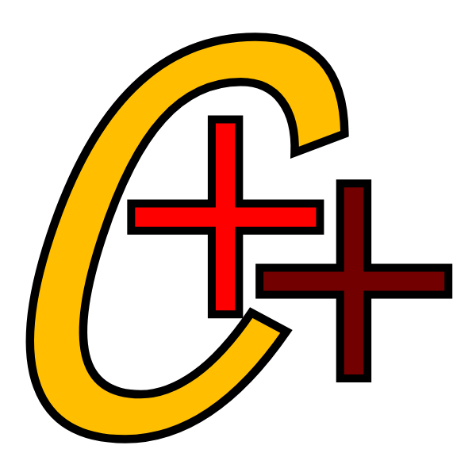

Mi Página con Bootstrap
Bootstrap es un framework front-end utilizado para desarrollar aplicaciones web y sitios mobile first, o sea, con un layout que se adapta a la pantalla del dispositivo utilizado por el usuario.
| # | Nombre | Paterno | Materno |
|---|---|---|---|
| 1 | Bernabe | Fernandez | Gomez |
| 2 | Felipe | chavez | figueroa |
| 3 | Diego | Juarez | Vazquez |
Compiladores
LENGUAJES
Es un Software que traduce un programa escrito en un lenguaje de programación de alto nivel (C / C ++, COBOL, etc.) en lenguaje de máquina. Un compilador generalmente genera lenguaje ensamblador primero y luego traduce el lenguaje ensamblador al lenguaje máquina. Una utilidad conocida como «enlazador» combina todos los módulos de lenguaje de máquina necesarios en un programa ejecutable que se puede ejecutar en la computadora.

Link 1Contabilidad
Definicion tecnica
La contabilidad es un recurso del que se dispone para administrar los gastos e ingresos de una compañía. Cualquier empresa en el desarrollo de su actividad realiza operaciones de compra, venta, financiación como consecuencia de esas actividades su patrimonio varía y obtiene un beneficio o una pérdida.
Link 2Base de Datos
MYSQL
Una base de datos es una colección organizada de información estructurada, o datos, típicamente almacenados electrónicamente en un sistema de computadora. Una base de datos es usualmente controlada por un sistema de gestión de base de datos (DBMS). En conjunto, los datos y el DBMS, junto con las aplicaciones que están asociados con ellos, se conocen como un sistema de base de datos, que a menudo se reducen a solo base de datos..